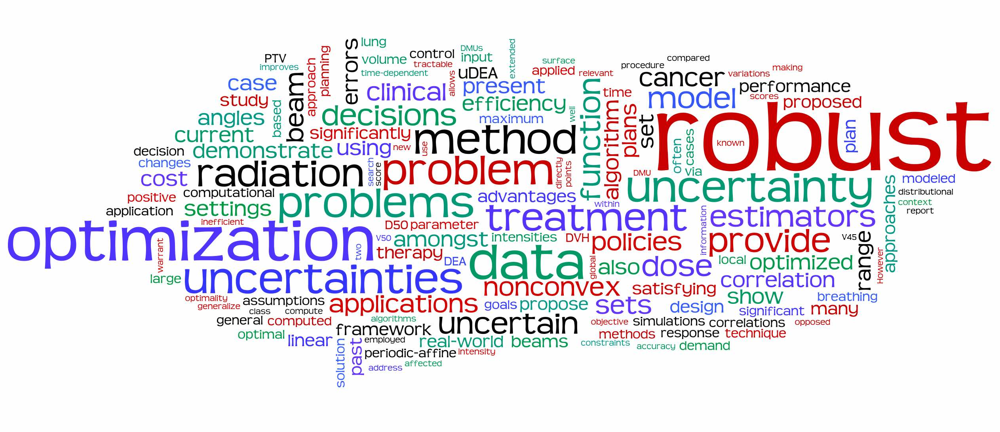

Optimization in its broad definition and robust optimization, in particular, are my core research areas. My goal is to develop methods in nonconvex, in multi-objective, and in multi-stage settings because they directly relate to real-world problems, e.g., machine learning, healthcare, supply chain, and engineering design.
This word cloud is from my recent papers' abstracts and is created with Wordle.
